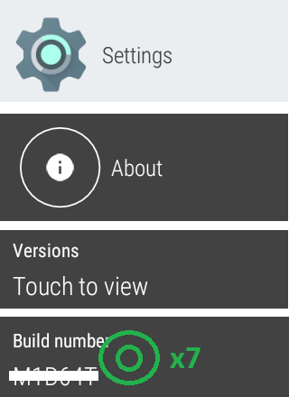
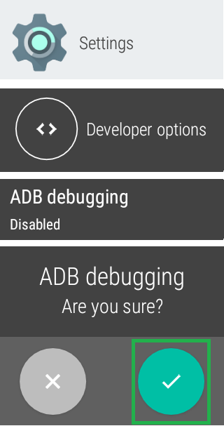
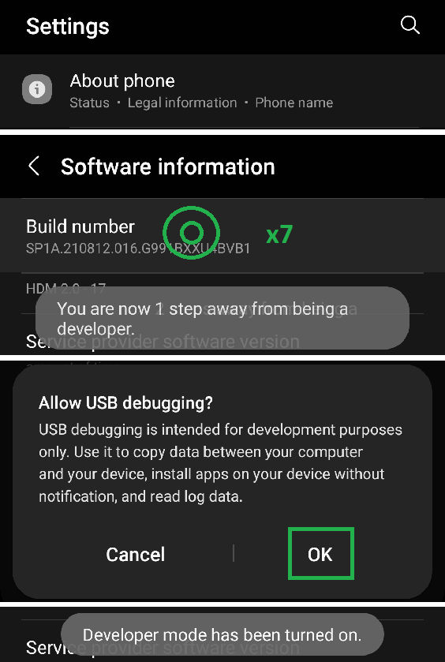
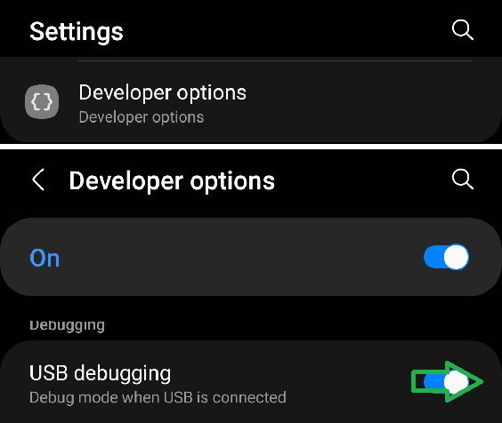
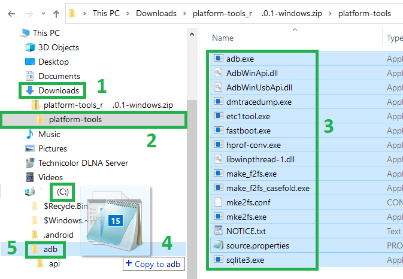
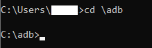
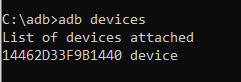
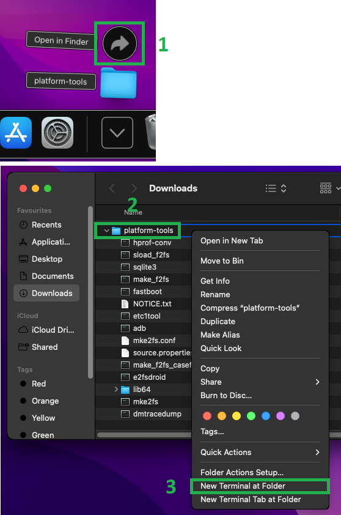
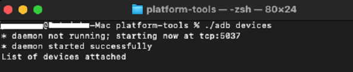

Android Debug Bridge
Prepare your device for Debug⌁
This step is mandatory to connect it through ADB with a physical connection. If your device doesn't have a physical USB connector you need to use ADB over Wi-Fi (documentation pending).
If you want to debug a smartphone skip to here.
Smartwatch⌁
- Enable Developer Options
Settings -> About -> Versions -> Build Number
Tap 7 times on the build number version until the watch will display "you're a developer".
 - Settings -> Developer Options -> ADB Debugging
Enable ADB Debugging

Smartphone⌁
- Enable Developer Options
Settings -> About -> Software -> Build Number
Tap 7 times on the build number version until the watch will display "you're a developer".
 - Settings -> Developer Options -> USB Debugging
Enable ADB Debugging

Install ADB on a Windows computer⌁
- Download Android Debug Bridge on your computer.
1Open the Downloads folder
2Open the file you downloaded
3Select all files
4Copy them into the5adb folder you created in C:

- Run a new command prompt window (
Start -> Run - > cmd) with Administrator privileges.

Sideload an app with ADB in Windows⌁
- Connect your device (watch/phone) with an USB cable to your computer, unlock the screen.
- Enter
cd \adb
 - Enter
adb devices

- Look at the device connected and authorize debug, always.


- Enter again
adb devices
You should now see your device in the list.
 - Copy the file you want to install in the C:\ADB folder (let's call it
myapplication.apkas an example, if its name contains spaces rename it to something short and simple, likeoop.apkorxdrip.apk). - Enter the command
adb install -r myapplication.apkand wait for completion (replacemyapplicationwith the name of your app). - The app should now be present on your device.
Install ADB on a Mac⌁
- Download Android Debug Bridge on your computer.
1Open the Downloads folder in Finder
2Right click the platform tools folder
3Select New Terminal at Folder

Sideload an app with ADB in iOS⌁
-
Connect your device (watch/phone) with an USB cable to your computer, unlock the screen.
-
Enter
./adb devices
 -
Look at the device connected and authorize debug, always.
-
Enter again
./adb devices
You should now see your device in the list. -
Copy the file you want to install in the platform tools folder (let's call it
myapplication.apkas an example, if its name contains spaces rename it to something short and simple, likeoop.apkorxdrip.apk). -
Enter the command
./adb install -r myapplication.apkand wait for completion (replacemyapplicationwith the name of your app). -
The app should now be present on your device.
INSTALL_FAILED_VERSION_DOWNGRADE⌁
This probably means the app is already present on your device with a more recent version.
Try to find it and uninstall it.
If there's no way to uninstall it try to sideload with the downgrade switch:
(Windows) adb install -r -d myapplication.apk
(Mac) ./adb install -r -d myapplication.apk